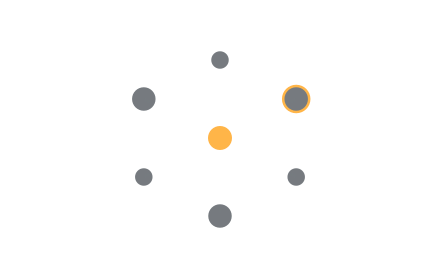
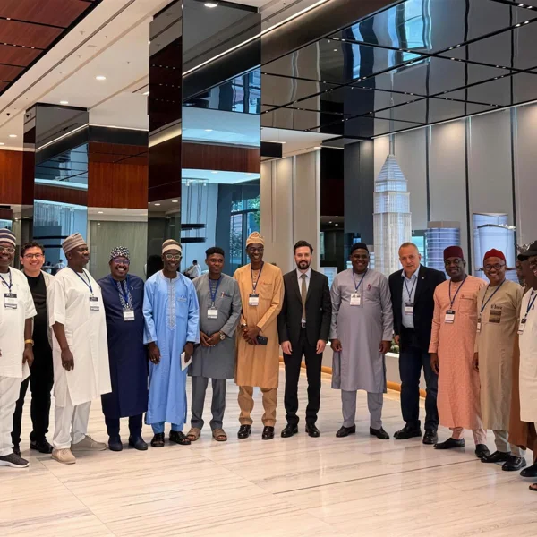

TAKVİM 01
Girişimci Başvuru
15 Haziranson başvuru

Fintek girişimleri için uluslararası düzeyde bir cazibe merkezi olma hedefiyle kurulan Fintech Zone, İstanbul Finans Merkezi'nin stratejik bir parçası olarak fintek ekosistemini güçlendirir.
Ortaklık Yapımız
Ülkemizin tüm fintek ekosistemine ulaşacak çeşitli programlarla bir fintek kümelenmesi inşa ediyoruz.
Ülkemizden global pazarlara, hinterlandımızda yer alan ülkelerden Türkiye'ye girişim transfer etmeyi hedefleyen bir stratejiye sahibiz.
Yeni nesil bir teknopark olarak fintek odaklı, dijital programlarla büyümeyi destekleyen modern bir ekosistem sunuyoruz.
Regülasyon konusunda kamu ile, rekabetçilik anlayışının inşasında ise bankacılık sektörü ile fintekleri buluşturmayı planlıyoruz.
İFM ve TGB kanun ve mevzuatlarının sunduğu fırsatlarla finteklerin entegrasyonuna katkı sağlıyoruz.


Kurumsal şirketlerin ihtiyaçlarını startup'ların yenilikçi çözümleriyle buluşturmayı ve ticarileşme süreçlerini hızlandırmayı hedefleyen Fintech Gate İstanbul Destek Programı, İstanbul Kalkınma Ajansı (İSTKA) desteğiyle hayata geçirildi. Proje 2026 sonuna kadar devam edecek.

Kurumsal Başvuru'dan Demo Day ve Ticarileşme'ye sekiz adımlık proje yol haritası.
Fintech Zone, fintek ekosisteminin tüm paydaşları için kümelenme odaklı programlar sunacaktır. Programlar girişimciler, finansal kurumlar, düzenleyiciler (kamu kurumları), hizmet sağlayıcılar, danışmanlar ve yatırımcılar dahil olmak üzere tüm fintek ekosistemi ve paydaşlarını desteklemek ve birbirine bağlamak için hayata geçirilecektir.

Girişimcilerin ve yenilikçilerin, ulusal ve uluslararası ağlarla buluştuğu, destek ve kaynaklarla donatılmıştır.

Fintek girişimlerinin inovatif ürünlerini gerçek dünya koşullarında test etmelerine olanak tanıyacak, regülasyonlara uyumlarına yardımcı olacaktır.

Türk fintek ekosistemini uluslararası pazarlara açarak, yerel girişimlerin küresel rekabetçiliğini artırmayı ve yabancı girişimlerin Türkiye'de filizlenmesini sağlayacaktır.
Öğrenciler, girişimciler, akademisyenler ve finans sektörü profesyonellerini hedef alarak, fintek alanında bilgi ve beceri gelişimine katkıda bulunacaktır.
Fintek ekosisteminin çeşitli paydaşlarını birleştirerek bilgi paylaşımı, iş birlikleri ve ağ oluşturma fırsatları sunacak ve katılımcılara yeni bakış açıları kazandıracaktır.

Fintek ekosisteminin kapsamlı bir şekilde anlaşılmasını ve sektörel bilginin geliştirilmesini hedefleyen yayınlar sunacaktır.

Fintek ekosisteminin dinamiklerini kavramak ve finteklerin veriye dayalı karar alma süreçlerine yardımcı olacaktır.

Fintek girişimlerine performanslarını objektif kriterler temelinde değerlendirme ve gelişim alanlarını belirleme imkanı sunacaktır.
Fintech Zone bünyesinde yer almak isteyen Ar-Ge proje sahipleri; Ön Başvuru, Başvuru ve Değerlendirme, Kabul ve Sözleşme aşamalarını tamamlayarak teknoparka dahil olur. Ar-Ge Hizmetleri ile girişim/firmaların projelerini geliştirmeye yönelik teknik-teknolojik destek, danışmanlık ve kaynak sağlama faaliyetleri gerçekleştirilmektedir.

Çalıştay kapsamında; kurum içi inovasyon ile girişim çevikliğinin doğru zeminde nasıl buluşturulabileceğini, PoC (Kavram Kanıtlama) süreçlerinden ticarileşmeye uzanan yolun nasıl hızlandırılabileceğini ve gerçek anlamda kazan-kazan yaklaşımı sunan katma değerli iş birliği modellerinin dinamiklerini ele aldık.
Fintech Zone Webinar Serisi'nin ilk etkinliğinde, finansal teknolojilerdeki güncel gelişmeleri, sektörel yenilikleri ve geleceğe yön verecek teknoloji trendlerini Ziraat Teknoloji Genel Müdürü Sayın Bayram Tuzcu ile birlikte değerlendirdik.
Devamı
Nijerya'nın farklı eyaletlerinden finans, akademi ve bilişim alanlarında görev yapan yöneticilerden oluşan geniş bir heyeti İstanbul Finans Merkezi'nde ağırladık.
DevamıAçılış: 01.09.2026 · Son başvuru: 13 Kasım 2026, saat 23.59. Kaynak: FTZ Instagram paylaşımı ve tubitak.gov.tr duyurusu.
DevamıBaşvuru süreci ve Fintech Zone hakkında en çok merak edilenlere Sık Sorulan Sorular bölümünde göz atın ve fintek yolculuğunuzda bilmeniz gerekenleri keşfedin!
Başvuru sürecinde yanınızdayız: alanında uzman ekibimiz ön başvuru aşamasından itibaren ihtiyaç duyduğunuz her durumda gerekli desteği sağlamaktadırlar.